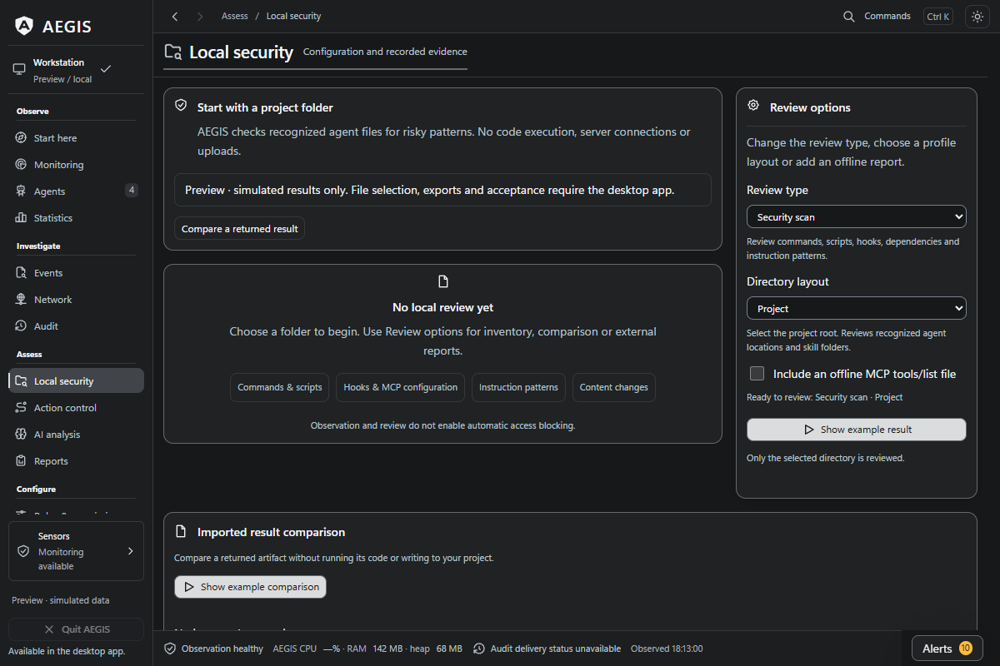
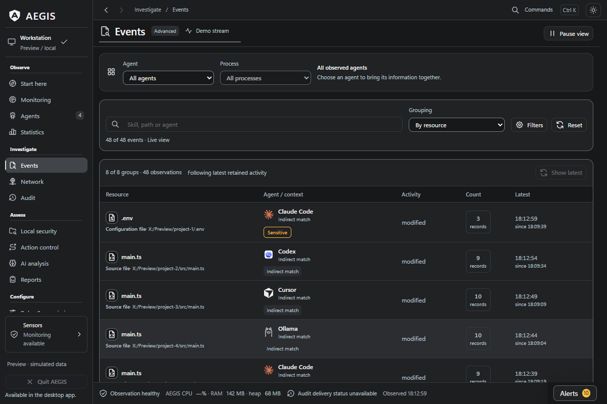

What ran behind the reply?
Your coding agent has a process tree, files to work with and connections to inspect. AEGIS brings that activity into view.
A local desktop workspace for monitoring AI agents, reviewing their setup and investigating what happened. Open source, MIT licensed, built for Windows first.

A process deserves
a second look.
A terminal stays busy after a reply. An unfamiliar child process appears. A project file changes. Start with the detected agent and follow the recorded observations through one workspace.
Find a detected agent
See its processes alongside resource use and sensor status.
Follow the process tree
Inspect the observed parent and child process relationships.
Inspect observed activity
Review TCP endpoints and activity in configured file locations.
Review an alert
Inspect the captured evidence, record a review and keep the investigation moving.


Find where the resources went.
When several agents are running, a single system-wide graph leaves work to do. AEGIS connects detected agents to their process information and CPU/RAM views.
For Claude Code, session usage subtotals and estimated costs add another useful question: which work is consuming tokens? Review input, output and cache accounting alongside the activity.
Explore usage accountingReview the setup before the next run.
A new skill, a project configuration change or an updated agent profile is a good moment to look closer. The Local security workspace brings selected project files, skills and profiles into one review.
Inspect static findings, save a snapshot and compare what was added, changed or removed later. Imported offline reports can sit alongside the built-in review.
Walk through a local review



Turn a moment into a useful report.
Keep the context when an alert deserves a closer look. Move between agent instances, file and network views, alerts and audit history to examine the captured activity.
Export JSON, CSV, HTML or a diagnostic ZIP for your investigation. A clear, reproducible report also helps contributors understand a bug or improve a detection rule. Review the contents before sharing them publicly.
Follow an alert reviewMake the first look a useful one.
Start with an agent and a task you already know. The published Windows beta is 0.20.1-beta.
Get the Windows beta
Open the release page for the installer, release notes, manifest and signature.
Verify and install
Follow the download verification guide, then install the beta and open AEGIS.
Follow one familiar task
Start in Monitoring, choose a detected agent and inspect its processes, files or connections. Open Alerts when you want to review captured evidence, or Local security to inspect a project or skill.
For reviewed execution workflows, explore Action control and the selected-action MCP setup. These are explicit, separately configured routes.
Help the next developer take a closer look.
If AEGIS is useful to you, a GitHub star helps other developers find it. A new agent signature, a clear bug report or a better explanation in the docs can make the next investigation easier.
Try it on your next task.
Download the Windows beta, or explore the source and guides first.